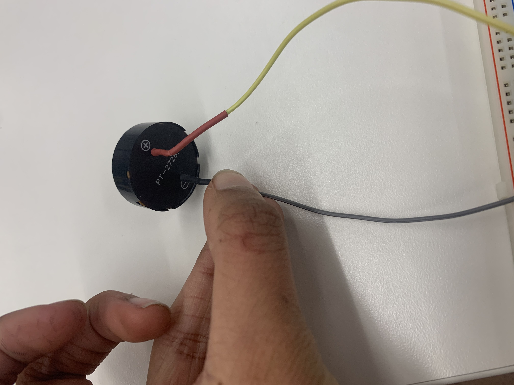

Audio Whack a Mole: Click the Button When You Here a Sound!
The Premise
The first game I tried to create was an "Audio Whack a Mole". I wanted a buzzer to randomly make sound for some random amount of time. If you click a button when the buzzer is on, an LED should light up. But, if you click the button when the buzzer is not making noise, then the LED should not turn on
Step 1: The Board: Circuit Design
We needed two ouputs for this board. The first would be connected to a button and a resistor and an LED. So, if voltage is flowing through this output pin, the LED will turn on only if the button is pressed. But, if there is no voltage flowing through this output pin, the LED will not turn on at all.

The second output is for the buzzer. Essentially, we want the buzzer to be connected to some output pin and then to ground. We don't need an extra resistor because the buzzer has resistance already. The buzzer looks like this:
The completed circuit board looks like this:

Step 2: The Code
The basic functions of our code should follow the following logic. 1) The buzzer is turned on for some random amount of time. This causes the voltage in the LED output pin to be turned on "HIGH" which means that the LED lights up when we click the button. Then, after this, 2) the buzzer is turned off for another random amount of time, which causes the LED output pin voltage to go to "LOW" so pressing the button does nothing.
We can use the random function that automatically chooses a pseudo random integer between 0 and whatever integer you input into the function subtracted by 1. This will let us choose random times for the buzzer being on and off
We need to use an Analog Write function for the buzzer. This takes inputs between 0 and 255, with 0 indicating always 0 voltage and 255 indicating always full voltage. Having this value be a middle value such as 124 will mean that the buzzer can have a modulating input voltage, which leads to a modulating frequency.
Here is our arduino code, complete with 1) variables defined for the output LED and buzzer pins, 2) the setup of these pins as outputs, and 3) the loop function with the code we just discussed above
int LED = 9;
int buzzer = 13;
// the setup function runs once when you press reset or power the board
void setup(){
Serial.begin(9600);
pinMode(LED, OUTPUT);
pinMode(buzzer, OUTPUT);
//Setup buzzer variable and LED's here
}
void loop() {
analogWrite(buzzer,125);
digitalWrite(LED, HIGH);
delay(random(200,5000));
analogWrite(buzzer,0);
digitalWrite(LED, 0);
delay(random(200,5000));
}
After finishing the design of this circuit and uploading our code to the board, our final game looked like this:

Tada! We have a finished Audio Whack a Mole! To make this a better game, as we play with LCD screens, maybe I can create a score board and keep score!